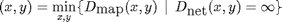
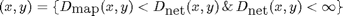

STREAMNETWORK
Contents
Algorithm:
- extract the list of endpoints (leaves) of the existing network (seen as a graph).
- calculate the all-pair distances Dmap between endpoints over the cost map (ie. through paths defined everywhere else on the grid)
- calculate the all-pair distances Dnet between endpoints over the network (ie only over paths defined inside the network)
- WHILE a new path (not already part of the network) is added DO
- create a path linking the two closest disconnected endpoints (through the network), ie. the couple of endpoints verifying: 
- for each endpoint x, create a path linking it to all other connected endpoints y (through the network) that are closer in the map than in the network, ie.: 
- recompute the all-pair distances Dnet between endpoints over the network like in step 3
Syntax
fnet = STREAMNETWORK(net, cost, vertex, iscontinuous);
Inputs
net : already connected network; it can be either:
- a sparse (adjacency) matrix representing the connection between the vertices of the network inside the image domain; in that case, an additional variable providing with the coordinates of the vertices inside the image domain should be passed (see variable vertex below); if so, net should also be symmetric.
- a logical matrix (binary mask, eg. a skeleton) providing the different points of the network inside the image domain.
cost : matrix defining a dense cost function over the image domain.
vertex : in the case the network is passed as a sparse matrix, vertex provides with the coordinates of the vertices inside the image domain.
Outputs
mapnet : a map of the completed network.
net, vertex : the completed network described by its vertices and edges.
References
[SG07] P. Soille and J. Grazzini: "Extraction of river networks from satellite images by combining morphology and hydrology", Proc. CAIP, LNCS, vol. 4673, pp. 636-644, 2007.
[GDS10] J. Grazzini, S. Dillard and P. Soille: "A new generic method for semi-automatic extraction of rivers and road networks in low- and mid- resolution satellite images", SPIE Remote Sensing, vol. 7830, 2010.
See also
Called: MAP2GRAPH_BASE, BRESENHAMLINE, DIJKADVANCED, DIJSKTRA_BASE.
Function implementation
function [mapnet, net, vertex] = streamnetwork(net, cost, vertex)
checking the parameters
if ~(isparse(net) || islogical(net)) error('streamnetwork:inputerror', ... 'sparse or logical matrix required to represent the network'); elseif ~isnumeric(cost) error('streamnetwork:inputerror', ... 'numeric matrix required to represent the cost function'); elseif islogical(net) && ~isequal(size(net),size(cost)) error('streamnetwork:inputerror', ... 'incompatible sizes for the input matrices'); end if issparse(net) if size(net,1)~=size(net,2) error('streamnetwork:inputerror', ... 'symmetric square sparse matrix required'); elseif ~isnumeric(vertex) || size(vertex,2)~=2 error('streamnetwork:inputerror', ... 'incompatible input graph and vertex matrices'); elseif max(vertex,1)>size(cost,1) || max(vertex,2)>size(cost,2) error('streamnetwork:inputerror', ... 'incompatible vertex coordinates and image domain'); else [i,j] = find(net,1,'last'); if i>size(vertex,1) || j>size(vertex,1) error('streamnetwork:inputerror', 'incompatible vertices indices'); end end end
setting parameters
if issparse(net) && ~isequal(net,net') % symmetric-ize net = net | net'; end nvert = size(vertex,1); % from now on, we will work with a graph only... however the output is a map if islogical(net) % we have a map here mapnet = net; % in the case the input network is given as a (logical) map, we convert % it into a weighted graph linking the branchpoints and endpoints of % the network (recude=true) [net,vertex] = map2graph_base(net, cost, 8, true); elseif issparse(net) % in the case the input network is already a graph, we need to define % the weights of the different edges of the graph [mapnet, edges, wedges] = graph2map_base(net, vertex, cost); % net is now a weighted graph; vertex unchanged % rebuild the graph net = sparse(edges(:,1), edges(:,2), wedges, nvert, nvert); net = net | net'; end
extract the endpoints (leaves) of the network : step (i)
endPts = netleave(net,vertex); % note: we could have called this function earlier, prior to the previous % conversions, and, for instance, use morphological tools (when available) % for extracting the leaves of the network when given as a map (see function % NETLEAVE below) nend = size(endPts,1);
compute once for all the all-pair distances Dmap between endpoints over the cost map (ie. through paths defined everywhere on the grid): step (ii)
W = cost; % W = 1 / cost; % geodesics will follow regions where W is large order =0; % use order 0 approach m_seed = 'allpairs'; m_path = true; % compute the paths [Dmap, Pmap] = fmm_base(W, m_seed, m_path, endPts, endPts, order); % keep only the elements above the main diagonal of Dmap (on the diagonal % is the distance between a point and itself) Dmap = triu(Dmap,+1); % we reduce the complexity as Dmap is symmetric anychange = true;
DO WHILE a new path (not already part of the network) is added
while anychange anychange = false; % (re)calculate the all-pair distances Dnet between endpoints over the % network (ie only over paths defined inside the network): step (iii) % and (vi) Dnet = graphdistance(net, cost, vertex, endPts); % keep only the elements above the main diagonal of Dnet Dnet = triu(Dnet,+1); % create a path linking the two closest disconnected endpoints (through % the network), ie. the couple of endpoints verifying: step (iv) % (x,y) = argmin_{x,y} {Dmap(x,y) | Dnet(x,y)=Inf} [dum, x] = min(Dmap(Dnet == Inf)); if ~isempty(dum) [x,y] = ind2sub(x,nend); % update the graph net(x,y) = Dmap(x,y); net(y,x) = net(x,y); % symmetric-ize % update the map mapnet(Pmap(x,y)) = true; anychange = true; end % for each endpoint x, create a path linking it to all other connected % endpoints y (through the network) that are closer in the map than in % the network: step (v) % (x,y) = {Dmap(x,y)<Dnet(x,y) & Dnet(x,y)<Inf} [x,y] = find(Dmap<Dnet); if ~isempty(dum) net(x,y) = Dmap(x,y); net(y,x) = net(x,y); mapnet(Pmap(x,y)) = true; anychange = true; end end % end of streamnetwork
end
Subfunctions
%-------------------------------------------------------------------------- function endPts = netleave(net, vertex) if islogical(net) && ~isempty(ver('images')) % endPts are found as the endpoints of the (supposedly thinned) network % mask endPts = bwmorph(net,'endpoints'); % branchPts = bwmorph(net,'branchpoints'); [i,j] = find(endPts); endPts = [i,j]; % x-y coordinate of the endpoint vertices else % endPts are those points connected to only one another vertex in the % graph isEndPts = sum(net,2)==1; % indices of the endpoint vertices endPts = vertex(isEndPts,:); end end %-------------------------------------------------------------------------- function dist = graphdistance(graph, vertex, endPts) % find all the vertices of the graph [i,j] = find(graph); edges = unique(sort([i,j],2),'rows'); startvert = vertex(edges(:,1),:); endvert = vertex(edges(:,2),:); V = [startvert; endvert]; % dummy variable E3 = [ivert wedge]; dist = dijkadvanced(V, E3, endPts, endPts); % [dists,paths] = dijkstra_base(cost, startvert, endvert, 'sing1' ); end % %-------------------------------------------------------------------------- % function [Z1,Z2] = closestzone(D, Q) % % sadd = saddlefront_base(D, Q); % % map = false(size(D)); % map(sadd(1,:)+size(D,2)*(sadd(2,:)-1)) = true; % % [ic,icd] = ixneighbours(true(size(D)), map, 8); % % get rid of those neighbours which are not set to true in the map (ie, % % they don't belong to the set of saddle points) % ic(~map(icd)) = []; % icd(~map(icd)) = []; % % V = [Q(ic) Q(icd) D(ic)+D(icd)]; % V(V(:,1) == V(:,2),:) = []; % V = sortrows(V,3); % % dmin = min(V(:,3)); % imin = V(:,3)==dmin; % % Z1 = V(imin,1); Z2 = V(imin,2); % % end